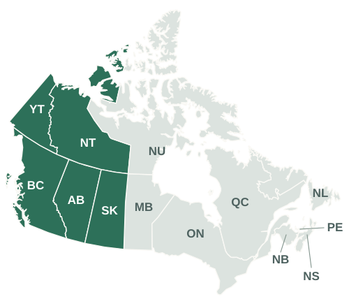

🔔 공지사항
📝 2026년 11월 캘거리 지역 순회영사 공지 (유의: 사전예약제 실시)
🔗 원문 보기 ↗주밴쿠버총영사관은 2026년 11월 캘거리 지역 순회영사를 아래와 같이 실시할 예정이오니 참고하시기 바랍니다.
- 일시 : 2026.11.12(목) (캘거리 시간) 13:00 ~17:00
- 장소 : 캘거리 한인회관(1-403-216-4600)
- 온라인 예약 : 2026.11.2(월) (캘거리 시간) 10시 ~ 마감시까지
2026년 10월 17일에 올라온 실제 공지를 발췌했습니다. 최신 일정과 예약 안내는 원문을 확인해 주세요.
주밴쿠버총영사관은 아래 다섯 지역을 관할합니다. 밴쿠버 외 지역에 거주하셔도 필요한 공지와 순회영사 일정을 받아보실 수 있어요.

공지, 순회영사 일정, 안전 안내와 지역 소식을 모니터링합니다.
게시판을 확인하고, 새로 올라온 글의 내용을 발췌해 채널로 보냅니다.
약 1시간 간격으로 새 글을 확인해요.
일정·장소·신청 안내 등을 발췌해요.
제목·작성일·원문 링크를 함께 보내요.
각 게시판의 최근 3페이지를 확인합니다. 공지사항은 공식 RSS도 함께 읽어 새 글을 찾습니다.
첫 문단과 일시·장소·신청 안내를 발췌합니다. 해당 안내가 없으면 앞의 두 문단을 사용하며, AI로 내용을 새로 쓰지는 않습니다.
아래 목록에서 새 글을 찾은 뒤, 각 게시글의 원문 페이지를 읽습니다.
원문 주소 형식: …/brd/게시판ID/view.do?seq=글번호
텔레그램 채널을 구독하면 밴쿠버 영사관 웹사이트에 새 글이 올라왔을 때 알림을 받을 수 있습니다.